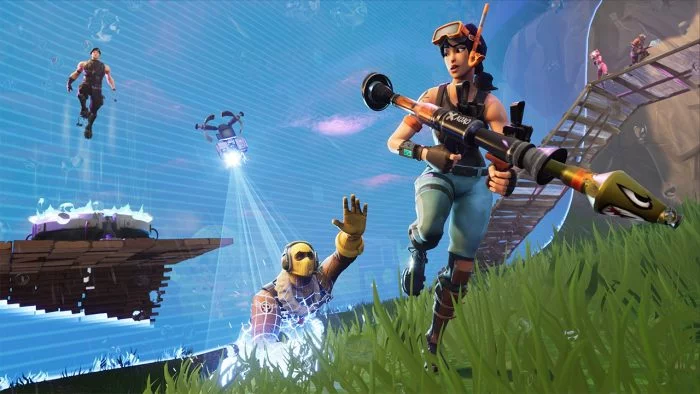
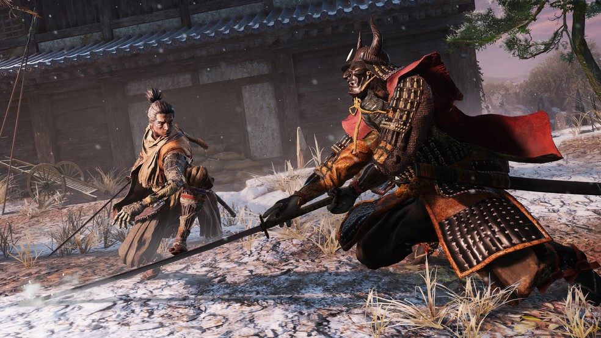

Notícias no mundo dos games!
Mudanças no CS:GO: Train, Mirage, Dust II e Studio sofrem alterações
Mudanças no CS:GO: Train, Mirage, Dust II e Studio sofrem alterações

- (CACHE)
- (STUDIO)
- (TRAIN)
- (DUST2)
A Valve, desenvolvedora de Counter-Strike: Global Offensive, divulgou uma importante atualização envolvendo Mirage, Dust2 e Train, três mapas da rotação competitiva, além de melhorias na Cache. As modificações impactarão a jogabilidade no cenário mundial de CS:GO, com maiores benefícios para o lado Terrorista, que terá mais possibilidades na criação de jogadas.
- Melhorias de visibilidade
- Otimização para melhora de desempenho;
- Atualização no radar;
- Pequenas correções de bugs.
- Corrigido o bug onde os jogadores não recebiam dano pela explosão da C4;
- Melhorias no clipping;
- Melhoria gráfica nas bases de spawn do mapa (CT e TR);
- Pequenas melhorias.
- Aberto o skybox entre o bombsite A e a região do fundo;
- Melhorias de visibilidade;
- Pequenas correções de bugs.
- Aberto o skybox entre o escuro alto e o bombsite B.
League of Legends comemora seus 10 anos de aniversário

Em uma década, o League of Legends , mais conhecido como LoL , ganhou uma base enorme de fãs, gente o suficiente para lotar qualquer festa. É por isso que, apesar do aniversário de 10 anos do sucesso da Riot Games ser só no próximo dia 27 de outubro, as comemorações já iniciaram. Como o LoL é um jogo que está sempre tentando se atualizar, o anúncio das mudanças para a próxima temporada do game faz parte das celebrações, e deve acontecer ainda hoje. É que a Riot Games , desenvolvedora do jogo, vai realizar eventos em vários países ao redor do mundo na noite desta terça-feira (15), e transmitirá ao vivo uma apresentação com novidades e comemorações da data.
Além disso, será lançado um documentário na Netflix contando a história do jogo na última década, desde o seu desenvolvimento inicial. Intitulado “League of Legends: Origins”, o documentário deve chegar à plataforma de streaming na próxima quarta-feira (16), mostrando a criação do game e sua ascensão.
Fortnite ganha novo capítulo em sua história

Fãs de Fortnite já podem comemorar, pois a espera pelo capítulo 2 chegou ao fim. Depois de surpreender todo mundo com um buraco negro no meio jogo, a Epic Games já disponibilizou o “Fortnite – Capítulo 2″ para todo o mundo. O anúncio foi feito na conta oficial da desenvolvedora norte-americana de jogos eletrônicos no Twitter.
Como já era esperado, o shooter battle royale trouxe diversas novidades, como mapa totalmente reformulado, mais possibilidades em ambientes aquáticos e novos trajes. Os desafios do game foram reformulados no final do primeiro capítulo, mas, com a chegada da segunda parte, outros recursos levam os jogadores ainda mais longe.
Game Awards 2020: Sekiro leva o prêmio de melhor jogo do ano

- Jogo do Ano: Sekiro: Shadows Die Twice
- Jogo VR do Ano: Beat Saber
- Trabalho de Amor: Grand Theft Auto V
- Melhor com os Amigos: DayZ
- Jogabilidade Mais Inovadora: My Friend Pedro
- Jogo com uma História Rica e Surpreendente: A Plague Tale: Innocence
- Melhor Jogo em que Você é Joga Mal: Mortal Kombat 11
- Estilo Visual Surpreendente: Gris
- Com tanto sucesso, não seria uma surpresa se uma sequência para o jogo de samurai fosse anunciada em breve, o que provavelmente deve acontecer após o lançamento da próxima geração de consoles.
2019 foi um ano mediano para os jogos de videogame, contudo, tivemos alguns destaques bem positivos, que como é de praxe, foram reconhecidos pela The Game Awards, uma das maiores premiações do mundo dos games. Além do The Game Wards, outra premiação de bastante destaque na comunidade é a Steam Awards, que é realizada por uma das maiores plataformas de comercialização digital de jogos, cujos vencedores são escolhidos através de uma votação feita entre os consumidores. No último dia de 2019, a plataforma finalmente anunciou os vencedores da edição de 2019 e assim como no The Game Awards, Sekiro: Shadows Die Twice saiu como o grande vencedor da categoria “Jogo do Ano”. Outros destaques ficam por conta de Mortal Kombat 11, que saiu vencedor da categoria “Melhor Jogo em que Você é Joga Mal” e Beat Saber, que venceu a categoria “Jogo VR do Ano”.
Confira a lista completa de vencedores:
© Vasquez 2020 - todos os direitos reservados.